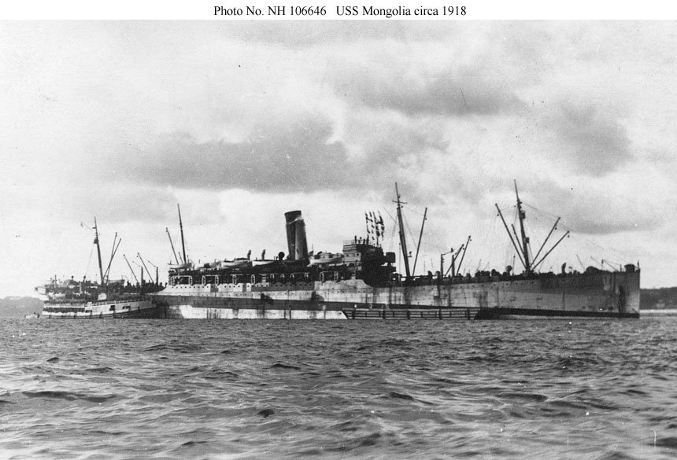
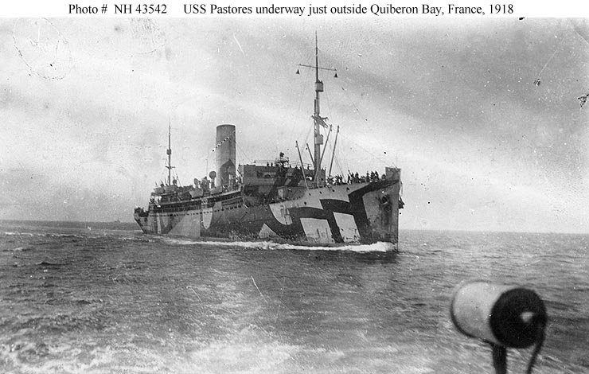

One brother crossed with his division. The other crossed alone, six weeks later, as a number to be filled in somewhere.
They went to France separately, and that difference decided almost everything that followed.
David Bryant crossed with Company D of the 317th Infantry aboard the SS Mongolia, reaching Brest on 8 June 1918. He went as part of an organised division, with the men he had trained beside at Camp Lee and would fight beside in the Meuse-Argonne. He was already their first sergeant.

Alexander sailed from Newport News at noon on 18 July 1918 aboard the USS Pastores. He crossed as a replacement — not with a division, not with a regiment, not with anyone he was going to stay with. Replacements went into a depot in France and were issued outward as losses required.
He was already a sergeant when he stepped aboard. The passenger list says so in type, which settles a question the handwriting elsewhere had left open: the stripes were earned in Virginia and at home, not in the field.

He did not cross entirely among strangers. His serial number, 3170885, sits inside a block of numbers issued to men from his own corner of Virginia, and their names are on the same sheets:
| Name | Serial | Home |
|---|---|---|
| Willie V. Williams, Sgt. | 3170777 | Chase City |
| Giles A. Wilkinson, Supply Sgt. | 3170815 | Clarksville |
| Julian P. Binford | 3170848 | South Hill |
| Robert D. Northington, Sgt. | 3170880 | South Hill |
| Alexander D. Bryant, Sgt. | 3170885 | Chase City |
| Elvedge H. Griffin | 3170897 | Buffalo Junction |
Willie V. Williams is the name to notice — a sergeant from Chase City itself, listed eight lines before him. Whatever else can be said, Alexander Bryant did not cross the Atlantic without a familiar face.
Walter was thirty that summer, farming and saw-milling, with a wife and by now perhaps more than two children. His mother, Nancy E. Bryant, kept Post Office Box 24. Both of her absent sons had given that box as the address to notify.